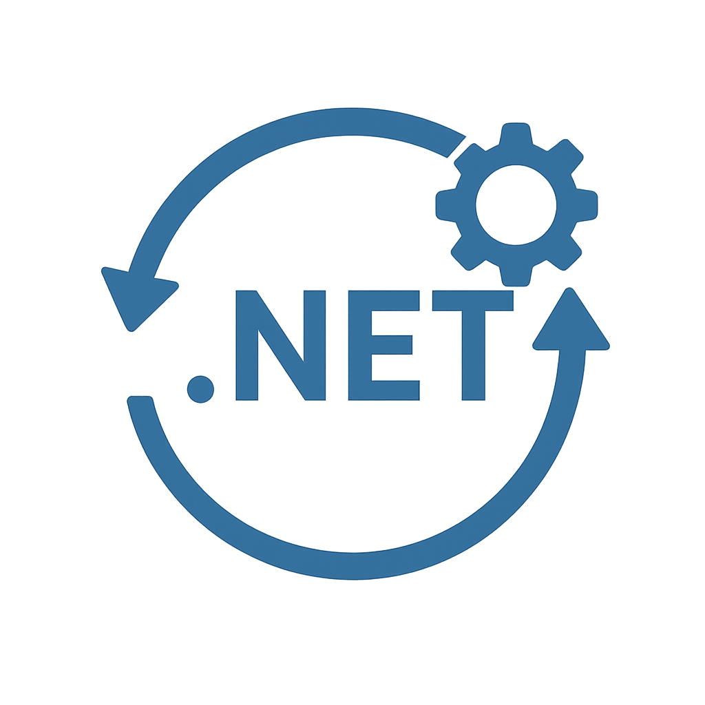

Je développe des applications .NET sur mesure qui s'adaptent à vos flux de travail, plutôt que l'inverse. Qu'il s'agisse d'un logiciel interne, d'un outil collaboratif ou d'une plateforme client, la solution est pensée pour être simple, efficace et évolutive.

Faire évoluer ou moderniser une application existante
J'assure la maintenance et l'évolution d'applications .NET existantes. Je corrige les dysfonctionnements, améliore les performances et ajoute de nouvelles fonctionnalités.
Si nécessaire, je vous accompagne dans la migration vers .NET Core pour bénéficier d'une meilleure sécurité, de plus de rapidité et d'une pérennité technologique.
Sécuriser vos données et vos outils
Grâce à une expertise en .NET, C# et bases de données SQL Server, je mets en place des systèmes fiables et sécurisés. J'optimise la gestion des droits utilisateurs, je sécurise les flux de données et je veille à la robustesse des applications contre les failles potentielles.
Gagner en productivité et réduire vos coûts
Je développe des outils d'automatisation et de reporting personnalisés. Qu'il s'agisse d'export de données, de génération de tableaux de bord ou d'automatisation de tâches répétitives, mes solutions permettent à vos équipes de se concentrer sur l'essentiel.
Être accompagné par un expert technique de confiance
En tant que freelance .NET, je vous offre :
un interlocuteur unique,
une grande réactivité,
une collaboration agile et transparente,
une tarification adaptée à votre budget.
Qui suis-je ?
Chaque entreprise fait face à des défis uniques lorsqu’il s’agit de son système informatique.
Vous avez peut-être une application vieillissante difficile à maintenir, un logiciel sur-mesure à créer ou encore besoin de fiabiliser vos données.
En tant que développeuse .NET freelance, j’accompagne mes clients dans la conception, l’évolution et la maintenance d’applications qui répondent concrètement à leurs besoins métiers.
Application Blazor pour permettre le suivi de colis dans les entrepôts
de logistique
API .Net pour permettre la commercialisation de produits d'assurances par des courtiers.
Technologies et compétences
.NET Core / .NET 5/6/7
ASP.NET MVC / ASP.NET Core
Blazor (Server & WebAssembly)
Entity Framework Core
Web API RESTful
SQL Server, MySQL, PostgreSQL
Azure DevOps, GitHub Actions
CI/CD, Intégration et déploiement continu
Tests unitaires et tests d'intégration
Architecture logicielle (DDD, Clean Architecture)
Localisation
Développeuse .NET freelance à Lyon, disponible dans toute la France
Installée à Lyon (Rhône, région Auvergne Rhône Alpes), je collabore avec des entreprises partout en France, à distance ou sur site selon vos besoins.
Grâce aux outils de communication modernes, la distance n’est plus un obstacle : je reste proche de mes clients et assure un suivi régulier tout au long du projet.
Prête à discuter de votre projet ?
Contactez-moi pour en discuter ou planifiez un appel découverte.

Suivez-moi sur les réseaux sociaux